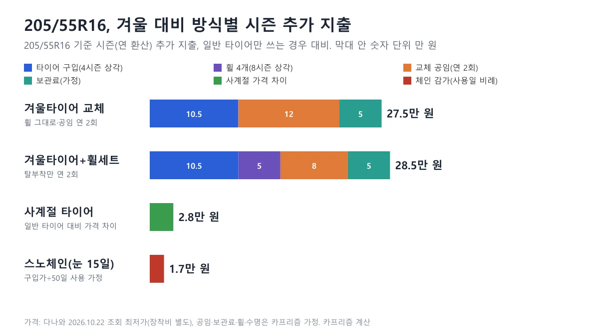
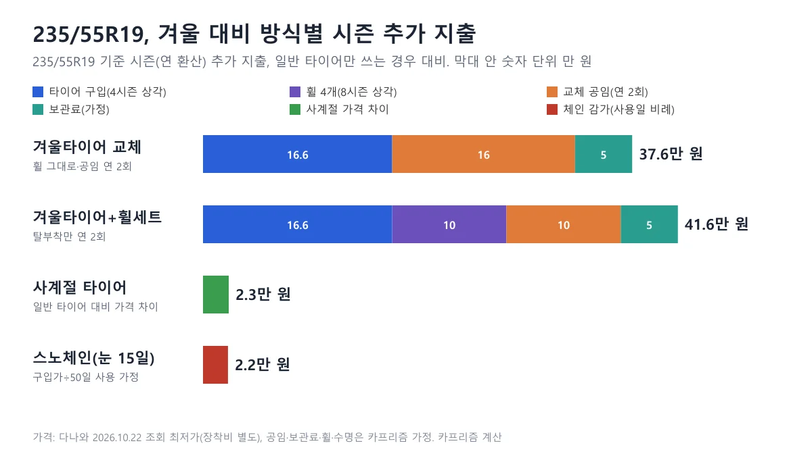
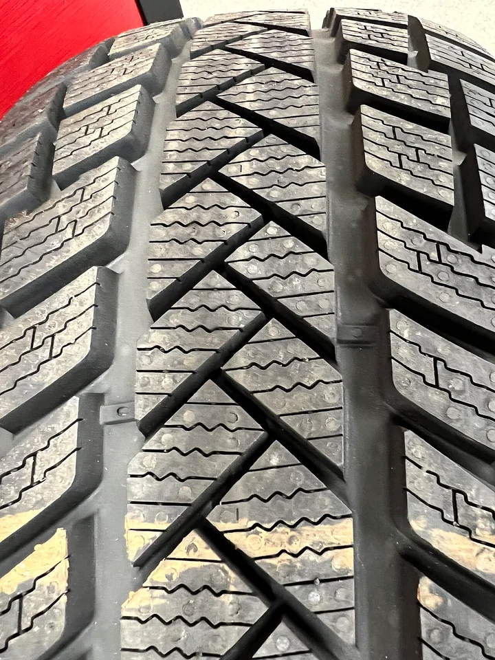
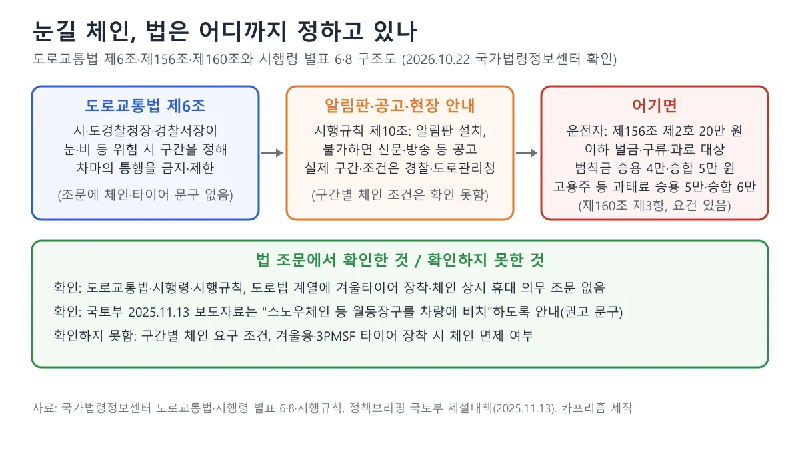
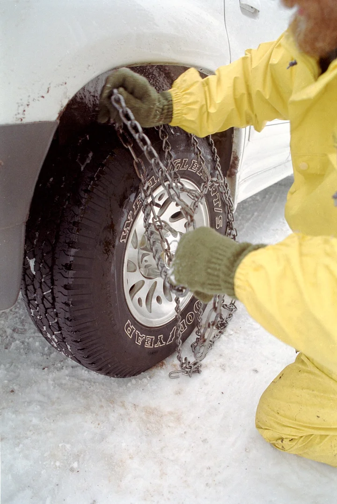
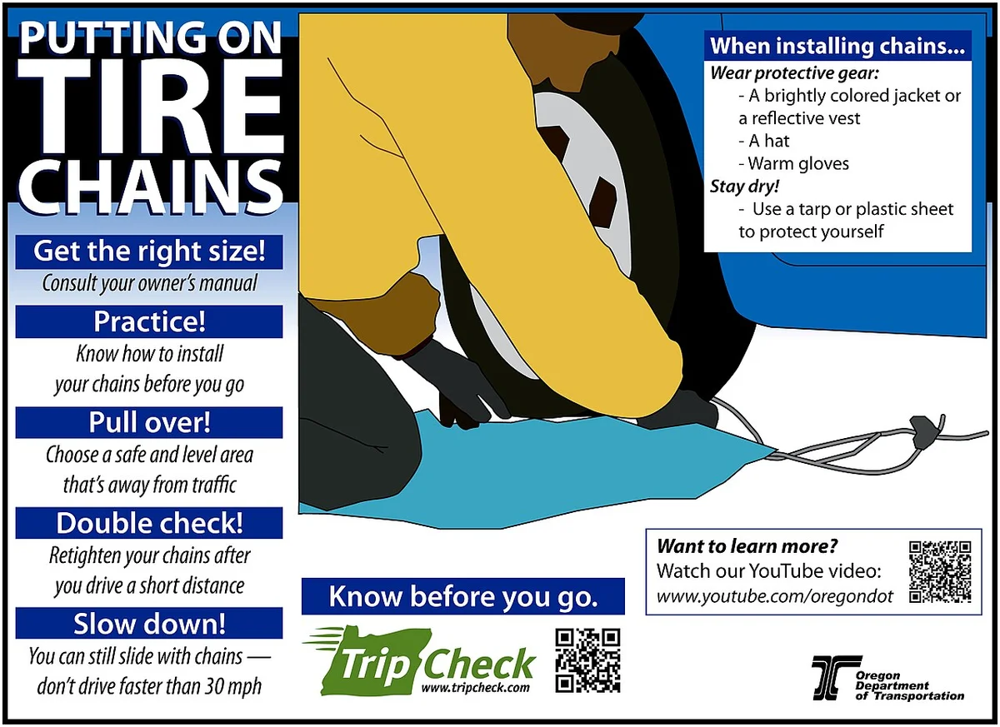
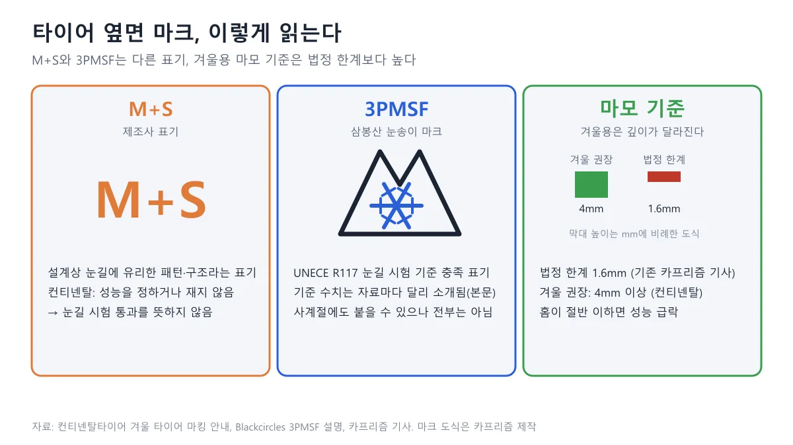
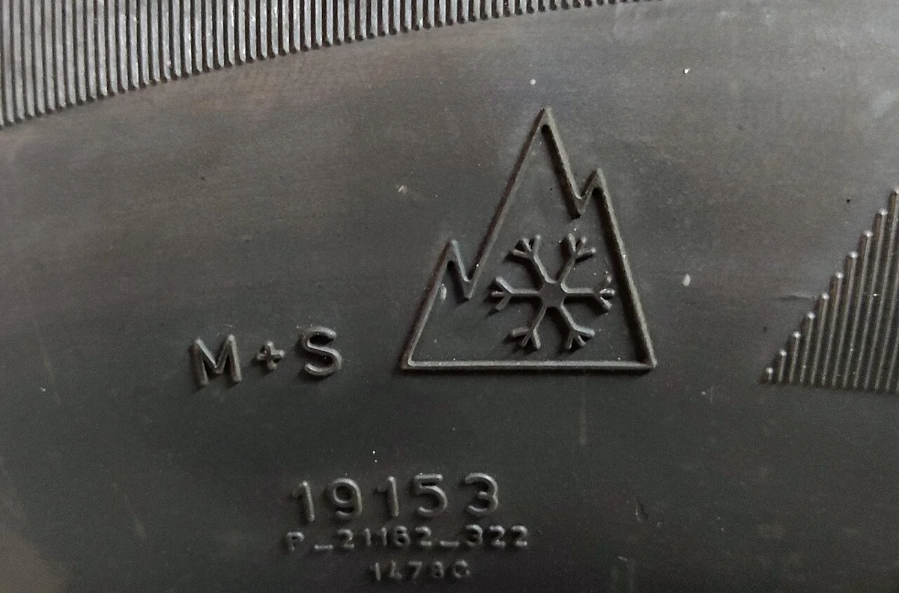
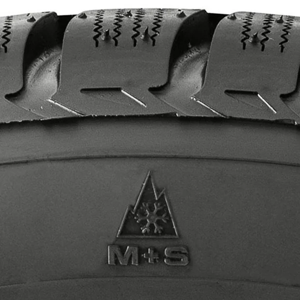

▲ 눈이 내리는 도로 갓길의 차량과 사람들(사진 제목은 '체인 장착 준비', 미국 오리건주) ⓒ Oregon Department of Transportation / Wikimedia Commons (CC BY 2.0)
"겨울타이어를 사야 하나, 사계절로 갈아타야 하나, 그냥 체인 하나 넣어 둘까?" 첫눈 소식이 들리면 이 세 가지 사이에서 한 번쯤 계산기를 두드리게 된다. 문제는 다들 성능 이야기만 하고, 정작 눈 오는 날이 며칠인지에 따라 하루당 얼마를 쓰는 셈인지는 알려 주지 않는다는 점이다.
이 글은 2026년 10월 22일 다나와에 올라온 공개 가격으로 205/55R16(준중형 세단급)과 235/55R19(중형 SUV급) 두 사이즈의 시즌 추가 지출을 카프리즘이 직접 계산했다. 교체 시기와 성능 이론은 기존 기사에 맡기고, 여기서는 비용과 체인 관련 법규, 마크 읽는 법, 구매 전 질문만 다룬다.
1. 눈 오는 날 5일이면 겨울타이어는 하루 5.5만 원? 205/55R16 시즌 비용
205/55R16 기준으로 겨울타이어 교체는 시즌 약 27.5만 원, 사계절 타이어는 약 2.8만 원, 스노체인은 눈 오는 날 15일 기준 약 1.7만 원이 일반 타이어 대비 추가로 든다. 이 숫자는 4개 방식의 연 환산 추가 지출이며, 계산 가정은 표 아래에 모두 적었다.
| 방식 (대표 제품 최저가, 장착비 별도) | 눈 5일 | 눈 15일 | 눈 30일 |
|---|---|---|---|
| 겨울타이어 교체 (한국 윈터 아이셉트 RS3 W462, 1본 105,010) | 275,010 | 275,010 | 275,010 |
| 겨울타이어 + 휠 세트 (휠 4개 40만 원 가정) | 285,010 | 285,010 | 285,010 |
| 사계절 타이어 (한국 키너지 4S2 H750 1본 93,000, 일반 키너지 EX H308 1본 65,040 대비) | 27,960 | 27,960 | 27,960 |
| 스노체인 (태영산업 우레탄 8호 56,340, 50일 사용 가정) | 5,634 | 16,902 | 33,804 |
| 하루당: 겨울타이어 교체 | 55,002 | 18,334 | 9,167 |
| 하루당: 사계절 타이어 | 5,592 | 1,864 | 932 |
| 하루당: 스노체인 | 1,127 | 1,127 | 1,127 |
하루당 값이 눈 일수에 따라 크게 달라지는 이유는 겨울타이어 교체가 눈이 오든 안 오든 드는 고정비이기 때문이고, 체인은 쓴 날만큼 닳는다고 가정했기 때문이다.

▲ 205/55R16 시즌 추가 지출 구성(막대 안 숫자 단위 만 원, 체인은 눈 15일). 카프리즘 제작, 계산 가정은 본문 참조
겨울타이어 교체가 비싼 이유는 타이어값보다 해마다 두 번 타이어를 갈아 끼우는 공임이 더 크기 때문이다. 27.5만 원 중 타이어 구입 상각분은 10.5만 원이고, 공임 12만 원과 보관료 5만 원이 나머지를 차지한다.
📍 이 계산의 가정 (표를 읽기 전에)
- 가격: 다나와 상품 페이지의 '장착비별도' 최저가를 타이어 1본 가격으로 보고 4본으로 계산했다(2026년 10월 22일 조회). 다나와가 본 단위를 별도로 표시하지는 않아, 구매 전 판매 페이지의 수량 기준을 꼭 확인해야 한다. 가격은 매일 바뀐다
- 제품: 겨울용·사계절·일반 모두 한국타이어 제품을 예시로 골랐다. 일반 타이어로 고른 키너지 EX H308은 2015년 등록 모델이라, 지금 파는 신형 컴포트 타이어와 가격이 다를 수 있다
- 수명: 4본 세트는 겨울용·사계절·일반 모두 4시즌(4년) 쓴다고 가정해 1/4씩 상각했다. 휠은 8시즌이다. 제조사 공식 수명이 아니라 카프리즘 가정이다
- 공임: 타이어만 탈착·밸런스를 맞추면 1본 15,000원(16인치), 20,000원(19인치), 연 2회(겨울 장착·봄 탈거)로 가정했다. 민간 비교 자료의 1본 15,000~25,000원 범위 안의 값이며 공식 가격표는 확인하지 못했다. 휠 세트는 4본 통째 탈부착 40,000원(16인치), 50,000원(19인치)을 가정했다
- 보관: 타이어 호텔 보관료는 매장마다 달라 공식 금액을 확인하지 못했다(한국타이어 2018년 보도자료 "보관료는 티스테이션 매장별로 상이"). 시즌 5만 원은 가정이며, 집에 보관하면 0원이다
- 빠진 것: 일반 타이어가 덜 닳아 생기는 이득(5장 정리), 타이어 공기압 센서(TPMS) 작업비, 폐타이어 처리비, 얼라인먼트는 표에 넣지 않았다
한 가지 더 알아 둘 점은 표가 보수적으로 잡혀 있다는 것이다. 겨울에 겨울타이어를 쓰면 일반 타이어가 그만큼 덜 닳는데, 이 이득을 빼면 16인치 겨울타이어 교체는 약 24.8만 원(27.5만 원에서 일반 타이어 4본 세트 260,160원의 5/12를 4년으로 나눈 약 2.7만 원을 뺀 값)이 된다. 겨울을 11~3월 5개월로 본 단순 가정이다.
2. 235/55R19 SUV는 얼마나 달라지나 — 사이즈가 커지면 겨울타이어 쪽이 더 벌어진다
235/55R19에서는 겨울타이어 교체가 시즌 약 37.6만 원으로 16인치보다 약 10만 원 많고, 사계절 타이어 가격 차이는 오히려 약 2.3만 원으로 줄어든다. 겨울용만 고가 사이즈의 영향을 크게 받기 때문이다.
| 방식 (대표 제품 최저가, 장착비 별도) | 눈 5일 | 눈 15일 | 눈 30일 |
|---|---|---|---|
| 겨울타이어 교체 (한국 윈터 아이셉트 에보4 SUV W340A, 1본 165,530) | 375,530 | 375,530 | 375,530 |
| 겨울타이어 + 휠 세트 (휠 4개 80만 원 가정) | 415,530 | 415,530 | 415,530 |
| 사계절 타이어 (한국 웨더플렉스 GT H755A 1본 136,500, 일반 다이나프로 HP2 RA33 1본 114,000 대비) | 22,500 | 22,500 | 22,500 |
| 스노체인 (태영산업 우레탄 9호 72,860, 50일 사용 가정) | 7,286 | 21,858 | 43,716 |
| 하루당: 겨울타이어 교체 | 75,106 | 25,035 | 12,518 |
| 하루당: 사계절 타이어 | 4,500 | 1,500 | 750 |
| 하루당: 스노체인 | 1,457 | 1,457 | 1,457 |
19인치에서 사계절 가격 차이가 오히려 줄어드는 것은 비교 대상인 일반 타이어(다이나프로 HP2)가 이미 비싼 편이어서 차액이 작게 잡히기 때문이다.

▲ 235/55R19 시즌 추가 지출 구성(막대 안 숫자 단위 만 원, 체인은 눈 15일). 카프리즘 제작
19인치는 일반 타이어 세트(456,000원)에서 겨울타이어 세트(662,120원)로 넘어가는 폭이 크고, 공임도 1본 2만 원으로 높게 잡았다. 마모 분산 이득(일반 세트 456,000원의 5/12를 4년으로 나눈 약 4.8만 원)을 반영하면 겨울타이어 교체는 약 32.8만 원이다.

▲ 스노 타이어의 트레드 근접 사진. 가는 절개선이 촘촘하다 ⓒ Oregon Department of Transportation / Wikimedia Commons (CC BY 2.0)
3. 휠 세트는 몇 원 이하면 이득일까? 공임과 보관료가 숨은 변수
16인치는 휠 4개가 약 32만 원 이하, 19인치는 약 48만 원 이하라면 휠 세트가 타이어만 갈아 끼우는 것보다 싸다. 이 기준은 이 글의 공임 가정에서 나온 값이라, 공임이 다르면 달라진다.
| 사이즈 | 타이어만 교체 연 공임 | 휠 세트 탈부착 연 공임 | 공임 차이 | 휠 4개 손익분기 가격 |
|---|---|---|---|---|
| 205/55R16 | 120,000원 | 80,000원 | 40,000원 절감 | 320,000원 (8시즌 상각) |
| 235/55R19 | 160,000원 | 100,000원 | 60,000원 절감 | 480,000원 (8시즌 상각) |
손익분기는 휠이 연간 지는 상각비(휠 가격÷8)가 공임 절감액과 같아지는 지점이다. 휠은 처음에 큰돈이 들어가기 때문에, 시즌 값이 비슷해 보여도 첫해 현금 지출은 겨울타이어만 사는 것(16인치 약 59만 원)보다 휠 세트(약 95만 원)가 약 36만 원 많다. 계산은 타이어 4본(420,040원)에 휠 40만 원, 공임 8만 원, 보관 5만 원을 더한 값(휠 세트), 타이어 4본에 공임 12만 원, 보관 5만 원을 더한 값(타이어만)이다.
카프리즘 시선
이 계산에서 겨울타이어 연 27.5만 원(16인치) 중 공임과 보관료가 17만 원으로 61.8%를 차지한다. 타이어 값 자체보다 해마다 몇 번, 어디서 갈아 끼우느냐가 비용을 좌우하는 구조다.
반대로 사계절 타이어와 스노체인은 눈 오는 날 수와 무관하게 값이 작아 하루당 비용이 빠르게 줄어든다. 다만 이는 비용만 비교한 것이며, 눈길에서의 제동·접지 성능 차이는 이 계산에 들어 있지 않다.
4. 체인은 법으로 의무일까? 도로교통법에서 확인한 것과 못 한 것
도로교통법 본문에는 겨울타이어 장착이나 스노체인 상시 휴대를 정한 조문이 없다. 국가법령정보센터의 도로교통법(법률 제22067호, 2026년 10월 13일 개정, 시행 2027년 4월 14일 조문)에서 '체인'·'월동'·'타이어'를 찾았을 때 그런 문구는 나오지 않았다. 같은 검색을 시행령·시행규칙·도로법과 그 시행령·시행규칙에도 해 봤지만 월동장구를 정한 조문은 없었다(검색어가 걸린 곳은 '6월동안', '인터체인지', 제설시설 목록처럼 무관한 용례뿐이었다). 조문은 2026년 10월 22일 국가법령정보센터에서 직접 확인했다.

▲ 눈길 통행 제한의 법적 구조. 카프리즘이 국가법령정보센터 조문을 읽고 정리했다
체인이 문제가 되는 곳은 제6조(통행의 금지 및 제한)다. 시·도경찰청장은 도로의 위험을 막고 교통 안전을 위해 구간을 정해 차마의 통행을 금지하거나 제한할 수 있고(제1항), 경찰서장은 우선 통행을 막은 뒤 도로관리자와 협의해 대상·구간·기간을 정할 수 있다(제2항). 이 금지·제한은 행정안전부령으로 정한 방식으로 공고해야 한다(제3항).
이 제한을 어기면 운전자는 제156조 제2호에 따라 20만 원 이하의 벌금이나 구류, 과료 대상이다. 영상 기록으로 위반이 입증되고 범칙금 통고처분을 할 수 없는 경우에는 제160조 제3항에 따라 차량 고용주 등에게 20만 원 이하의 과태료가 붙을 수 있다. 운전자가 제156조로 처벌받으면 과태료 처분은 할 수 없다(제160조 제4항).
참고로 제156조 제2호가 가리키는 것은 제6조 제1·2·4항(통행 금지·제한)이며, 구간 공고는 제3항·시행규칙 제10조에 따라 알림판을 세우고 어렵다면 신문·방송 등으로 알리는 방식이다. 국가법령정보센터 도로교통법 바로가기
📍 단속 구간과 과태료, 어디까지 확인했나
- 확인: 국토교통부는 2025년 11월 13일 제설대책 보도자료에서 "겨울철에는 스노우체인 등 월동장구를 차량에 비치하여 폭설에 대비하여야 하며"라고 안내했다. 법적 의무로 단정한 문장은 아니며, 같은 자료에서 기상 악화 시 제한속도를 20~50% 낮추고 결빙취약구간 490곳을 지정했다고 밝혔다. 이는 지난해 자료이며 올해 자료는 확인하지 못했다. 정책브리핑 제설대책 바로가기
- 확인: 도로교통법 시행령 별표 8(범칙금) 제21호는 통행 금지·제한 위반(제6조 제1·2·4항)의 범칙금을 승합자동차등 5만 원, 승용자동차등 4만 원, 이륜자동차등 3만 원으로 정한다. 고용주 등에게 붙는 과태료는 시행령 별표 6 제1호의2에 승합 6만 원, 승용 5만 원, 이륜 4만 원이다. 금액은 현재 별표 기준이며 사정에 따라 줄이거나 늘릴 수 있다. 시행령·시행규칙·도로법 단계에서 월동장구를 직접 정한 조문은 찾지 못했다
- 확인하지 못함: 특정 구간의 체인 의무 기준과 현장에서 실제로 어떤 처분이 나오는지
- 확인하지 못함: 겨울타이어나 3PMSF 사계절 타이어를 쓰면 체인 요구를 면제받는지 여부. 구간 통제는 해당 시점의 경찰·도로관리청 안내를 따라야 한다
결국 체인은 법이 상시로 사라고 정한 물건이 아니라, 통행 제한이 걸린 날 입구에서 요구받을 수 있는 물건이다. 통행 제한 구간의 구체적인 조건과 장착법은 스노체인 통행제한 구간·장착법 기사에서 다뤘다.

▲ 승용차 바퀴에 체인을 장착하는 모습(미국 오리건주). 구입가보다 장착에 걸리는 시간과 연습이 변수다 ⓒ Oregon Department of Transportation / Wikimedia Commons (CC BY 2.0)

▲ 미국 오리건주 교통부의 체인 장착 안내 포스터(영문). 사이즈 확인, 사전 연습, 안전한 곳에서 장착, 재조임, 저속 주행을 강조한다 ⓒ Oregon Department of Transportation / Wikimedia Commons (CC BY 2.0)
5. 3PMSF와 마모한계, 타이어 옆면에서 무엇을 읽어야 하나
타이어 옆면에서 먼저 볼 것은 산 모양 안에 눈송이가 들어간 3PMSF 마크이고, 그다음이 남은 홈 깊이다. M+S만 있고 3PMSF가 없다면 눈길 시험을 통과했다는 뜻이 아니다.

▲ M+S, 3PMSF, 마모 기준 읽는 법. 마크 도식은 카프리즘이 그렸으므로 실제 마크의 모양과 다를 수 있다
| 표기·기준 | 의미 | 출처가 말하는 것 |
|---|---|---|
| M+S | 눈·진흙에 유리하게 설계됐다는 제조사 표기 | 컨티넨탈은 성능이 "정해지거나 측정되지 않는다"고 설명한다. 블랙서클스는 제조사 자체 표기라 별도 성능 시험이 필요 없다고 정리한다 |
| 3PMSF | UNECE 규정 117의 눈길 시험을 통과했다는 표기 | 2018년 1월 1일 이후 생산한 겨울용·올웨더 타이어에는 3PMSF 표기가 의무다(컨티넨탈, 유럽 등 규정 기준이며 국내 법규가 아님) |
| 사계절 타이어 | 이름만으로는 눈길 시험 통과를 알 수 없음 | 3PMSF는 겨울용과 사계절 양쪽에 붙을 수 있으나 모두에 붙는 것은 아니다(블랙서클스) |
| 겨울용 마모 | 겨울 권장 트레드 깊이 4mm 이상 | 컨티넨탈은 알파인 마크 겨울 타이어를 "겨울 조건에서 최소 4mm 이상"으로 쓰도록 권장한다 |
| 법정 한계 | 1.6mm | 기존 카프리즘 기사에서 정리한 기준이며, 겨울용 성능 기준과 다르다 |
표에서 보듯 3PMSF가 있으면 눈길 시험 통과 표기를 가진 것이고 M+S만 있으면 그렇지 않다. 시험 기준값은 자료마다 달리 소개되어 있다.

▲ 타이어 옆면의 M+S 표기와 3PMSF(삼봉산 눈송이) 마크. 두 표기가 따로 새겨져 있다 ⓒ MatthewGhera / Wikimedia Commons (CC BY 3.0)

▲ 겨울용 타이어 옆면의 3PMSF 마크와 M+S(라사 스노웨이즈). 구매 전 옆면에서 이 마크를 직접 확인한다 ⓒ Carlider / Wikimedia Commons (CC BY-SA 4.0)
블랙서클스는 눈 위 제동 지수 1.07(기준 타이어보다 7% 우수), 스핀 견인 1.10(10% 우수)로 설명하고, 영국 타이어 판매점 오포네오는 기준 타이어보다 25% 나은 결과를 10회 중 6회 이상 내야 통과한다고 적는다. 어느 쪽이 맞는지는 이번에 UNECE 원문을 확인하지 못했으므로 이 글은 수치를 단정하지 않는다. 컨티넨탈 겨울 타이어 안내 바로가기
이 글의 가격표에서 고른 사계절 타이어 두 제품(키너지 4S2 H750, 웨더플렉스 GT H755A)은 2026년 10월 22일 다나와 상세 스펙에 주행 항목으로 M+S와 3PMSF가 함께 표기돼 있다. 다만 이는 다나와 스펙 표기이고 제조사 공식 페이지나 실물 옆면으로 확인한 것은 아니다. 같은 이름의 '사계절'이라도 눈길 시험 통과 표기가 있는 제품과 없는 제품이 섞여 있으니, 구매 전에 옆면 사진이나 제조사 제품 페이지에서 마크를 직접 봐야 한다. 겨울용이 4mm 아래로 닳았을 때의 판단과 교체 시기는 겨울용 타이어 교체 시기 기사에 있고, 사계절 타이어의 눈길 한계는 겨울타이어 vs 사계절 타이어 기사에서 따로 다뤘다.
6. 구매 전 확인 질문 5가지 — 가격표 앞에서 물어볼 것
세 방식 중 무엇이 싸게 느껴지는지는 내가 눈 오는 날 몇 번이나 달리는가와 어디서 보관하는가에서 갈린다. 아래 질문에 답을 적은 뒤 견적을 받는 편이 안전하다.
✅ 눈길 대비 구매 전 확인 질문 5가지
· 내 차 타이어 사이즈와 옆면 마크는? 사이즈(예: 205/55R16)와 현재 타이어의 M+S·3PMSF 표기를 먼저 확인한다
· 눈 오는 날 실제로 몇 번 달리나? 이 글의 5·15·30일 표에서 내 일수에 가장 가까운 칸의 하루당 비용을 본다
· 교체 공임은 얼마이고, 보관은 누가 하나? 매장 견적에 타이어만 탈착인지, 휠 세트 탈부착인지, 보관료(타이어 호텔)가 포함됐는지 적게 한다
· 사계절 타이어에 3PMSF가 있는가? 제품 이름이 아니라 옆면 마크와 제조사 페이지로 확인한다
· 자주 가는 길에 통행 제한·체인 안내가 있는가? 경찰·도로관리청 안내를 확인하고, 체인을 샀다면 눈 오기 전에 한 번 연습해 둔다
가격은 다나와 최저가가 매일 바뀌고 '무료장착' 상품은 장착비가 가격에 들어 있다. 이 글의 '장착비별도' 가격은 같은 제품의 무료장착 가격(205/55R16 RS3 W462는 111,100원)보다 낮으므로, 그 차이(6,090원)가 곧 장착 공임이라고 보면 안 된다. 다나와 윈터 아이셉트 RS3 가격 바로가기
7. 이 글이 확인하지 못한 것과 한계
- 가격: 다나와 최저가는 2026년 10월 22일 조회값이며, 수량 단위(1본)는 다나와가 직접 표기하지 않아 가정했다. 제조사 공식 소비자가는 확인하지 못했다.
- 공임·보관료·휠 가격: 공식 가격표를 찾지 못해 가정값을 썼다. 티스테이션 등 개별 매장 요금은 확인하지 못했다.
- 수명 가정: 겨울용·사계절·일반 4시즌, 휠 8시즌, 체인 50일 사용은 카프리즘 가정이다. 주행거리와 보관 상태에 따라 크게 달라진다.
- 3PMSF 여부: 표에 쓴 사계절 타이어 두 제품은 다나와 스펙에 3PMSF가 표기돼 있으나 제조사 공식 페이지로는 확인하지 못했다. 체인 호수가 해당 사이즈에 맞는지도 확인하지 못했다.
- 법령: 구간별 체인 의무 기준과 실제 단속·처분 사례는 확인하지 못했다. 범칙금·과태료 금액은 시행령 별표 6·8, 월동장구 규정 검색은 시행령·시행규칙·도로법 계열까지 확인했다. 도로교통법은 2027년 4월 14일 시행 예정 조문을 읽었고, 제6조 본문은 2020년 12월 22일 개정 이후 변경 표기가 없다.
- 성능: 이 글은 비용 비교이며, 눈길 제동·접지 성능 비교는 포함하지 않았다.
8. 요약
2026년 10월 22일 다나와 최저가와 카프리즘 가정으로 계산하면, 일반 타이어만 쓸 때보다 겨울타이어 교체는 시즌 약 27.5만 원(205/55R16)·약 37.6만 원(235/55R19)이 더 든다. 눈 오는 날이 5일이면 하루 약 5.5만 원, 30일이면 약 9,200원이다.
사계절 타이어는 일반 타이어와의 가격 차이만 연 약 2.8만 원(16인치)·약 2.3만 원(19인치), 스노체인은 사용일 비례 감가로 하루 약 1,127원·1,457원이다. 다만 사계절 타이어는 3PMSF 표기 여부를, 체인은 호수와 장착 연습을 먼저 확인해야 한다.
도로교통법 본문에는 겨울타이어·체인 상시 휴대 의무 문구가 없지만, 제6조 통행 제한을 어기면 제156조 벌칙 대상이다. 통행 제한 위반의 범칙금은 승용차 기준 4만 원이다. 구간별 체인 조건은 확인하지 못했으므로 해당 시점의 경찰·도로관리청 안내를 따라야 한다.
📚 함께 읽으면 좋은 글